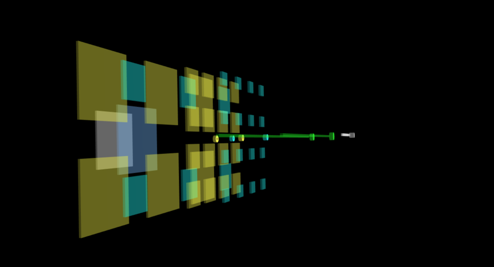

模型对象是 TensorSpace 的重要组件之一。所有的层对象都保存在模型中。
let model = new TSP.model.Sequential( container, config );
其中container对应的是 HTML 页面中用来渲染3D模型的元素。
config表示的是模型配置，包含不同的属性和方法。
属性
每个模型都有许多不同的配置。这些配置将作为该模型的默认配置为所有的层以及其他控件提供参数支持。
以构建一个Sequential()模型为例：
let model = new TSP.model.Sequential( container, {
layerInitStatus: "close",
aggregationStrategy: "max",
layerShape: "rect",
textSystem: "enable",
relationSystem: "enable",
animationTimeRatio: 0.1,
stats: true,
color: {
background: 0x000000,
conv2d: 0xffff2E,
pooling2d: 0x00ffff,
dense: 0x00ff00,
padding2d: 0x6eb6ff
}
} );
wb_sunny注意：
- filter_center_focus 模型的配置对于该模型来说是全局性的默认配置。我们可以针对每一个具体的元素（如层对象）进行细节上的配置， 以此来覆盖模型的默认配置。
以下展示了模型配置的具体信息：
- filter_center_focus R表示聚合体对象的数据计算及渲染策略。
- filter_center_focus "max" 或 "average"。 默认为 "average"。
- filter_center_focus "max" 使用该位置所有通道中的最大值； "average" 使用该位置所有通道中的平均值。
图1 - 聚合体（收拢状态下的层）对象
- filter_center_focus 表示展开状态下，层对象的排列方式。
- filter_center_focus "line" 或 "rect"。默认为 "rect"。
- filter_center_focus "line" 为线性排列； "rect" 使用“最佳视觉矩形”方式排列。
- filter_center_focus 关于“最佳视觉矩形”，请参阅 .layerShape。

图2 - 矩形方式排列的特征图

图3 - 线性方式排列的特征图
- filter_center_focus 表示层对象的初始状态：呈展开状态的特征图或者呈收拢状态的聚合体。
- filter_center_focus "close" 或 "open"。默认为 "close"。
- filter_center_focus "close" 将层对象收拢为聚合体; "open" 将层对象展开至特征图。
图4 - 初始状态为收拢的层

图5 - 初始状态为展开的层
- filter_center_focus 启用或禁用层对象的文字显示。
- filter_center_focus "enable" 或 "disable"。默认为 "enable"。
- filter_center_focus "enable" 以启用显示文字; "disable" 以禁用显示文字。
图6 - 文字显示层的维度

图7 - 无文字显示的层
- filter_center_focus 启用或禁用层间关系连线的显示。
- filter_center_focus "enable" 或 "disable"。默认为 "enable"。
- filter_center_focus "enable" 以启用关系连线的显示； "disable" 以禁用关系连线的显示。
图8 - 层间的关系连线

图9 - 不显示层间的关系连线
- filter_center_focus 表示实际动画时长与默认动画时长的比值。
- filter_center_focus 默认为 1.
- filter_center_focus 范围：大于0的实数。

图10 - 展开层动画（animationTimeRatio 为1）

图11 - 展开层动画（animationTimeRatio 为3）
- filter_center_focus 所有必要颜色的配置，包括所有层对象以及场景的背景。
- filter_center_focus 我们能在此配置中设置合适的场景背景色。
- filter_center_focus 关于“颜色”，详情参见 color。

图12 - 改变场景背景色为紫
- filter_center_focus 表示是否使用并展示stats控件。
- filter_center_focus true 或 false。默认为 false。
- filter_center_focus true 启用并显示控件； false 禁用并隐藏控件。
方法
- filter_center_focus 该方法实际使用配置的参数来创建所有可视化对象。
- filter_center_focus 详情参见Model (concept)。
- filter_center_focus 该方法实际载入神经网络模型。
- filter_center_focus 我们为该方法提供了回调函数。
- filter_center_focus 详情参见Load。
- filter_center_focus 该方法收集由神经网络模型所计算的层间输出数据来渲染3D可视化对象。
- filter_center_focus 我们为该方法提供了回调函数。
- filter_center_focus 详情参见Predict。
- filter_center_focus 获取在当前模型中的所有层对象。
- filter_center_focus 我们可以通过该方法获取所有层对象以进行配置或检查某些特殊配置。
- filter_center_focus 通过层名称(String)来获取特定层对象。
- filter_center_focus 我们可以通过该方法查找并更新某个特定的层对象。
延伸
更多关于在 TensorSpace 中不同的模型的实现方式，参见：
- filter_center_focus Sequential()
- filter_center_focus Model()